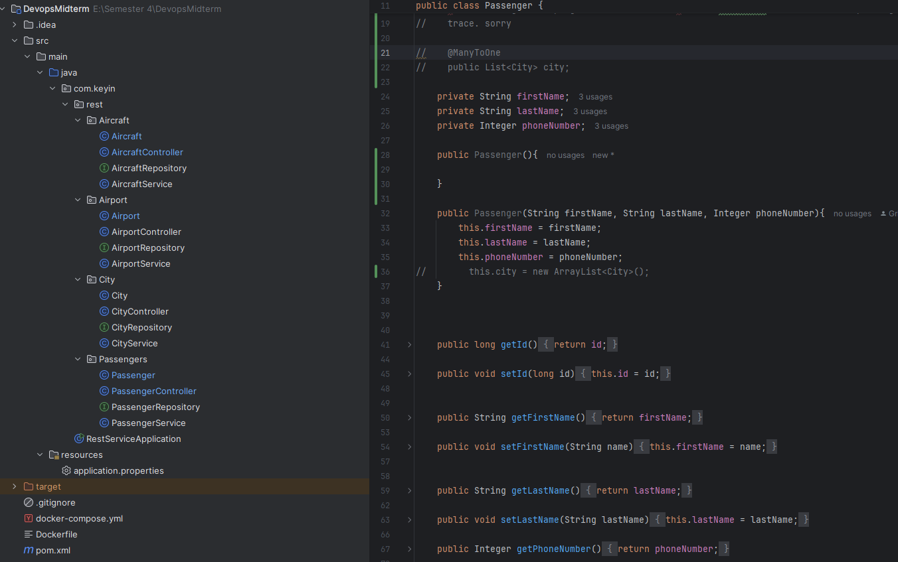
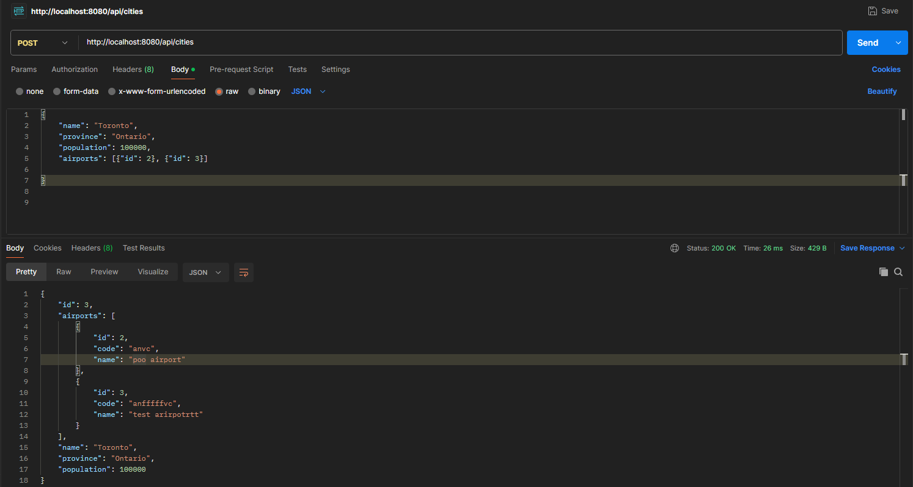

Matthew Verge
Matthew Verge
As of the date of writing, I am in the last week of my fourth semesters midterms. I've been given two assignments, a to-do list using Single-Linked-Lists,
and an airport database system, both in java maven. We're to use MySQL workbench, which is a step away from the world of postgres and react that i'm used to. The easier of the two
so far, has been the To-Do list. A simple program where i've set up scanners to take in queries from users, to allow one to sign up, sign in, and create / edit tasks. We were instructed to use arrays and not ArrayLists,
so you can only create 10 users, each with 10 tasks. Pretty tame; however, it was apparent that the rest of the midterms challenge was going to come from the airport database.
In this project, we were given a list of requirements, here's a snippet for example:
For a solo project, it seems like a moderate workload, but it was nothing I couldn't handle within the time frame. I made controller and service classes for Airports, Cities, Passengers, etc.
Each class had their own getters and setters for each variable, GetMapping and PostMapping for each of the api's sections, and connections between them. I.e, ManyToOnes for passengers only living in one city, or
OneToManys for a given aircraft to house however many passengers.

We used Postman to add and retrieve data from the API's database.
